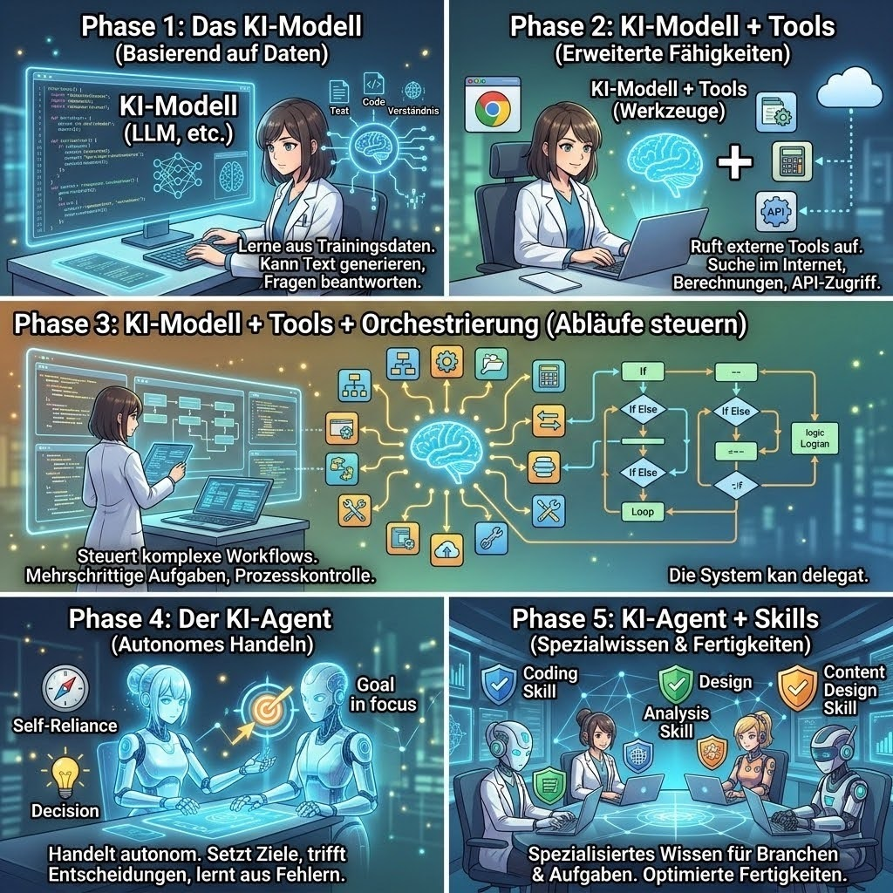

Vom Modell zum Agenten: Die Evolution
Klassische Large Language Models (LLMs) sind wie ein Gehirn ohne Hände. Sie können Texte generieren, Antworten formulieren und Ratschläge geben, aber sie können keine Aktionen in der echten Welt ausführen. KI-Agenten verändern das grundlegend. Sie kombinieren die Intelligenz von Sprachmodellen mit Werkzeugen (Tools) und einer autonomen Logik (Orchestrierung), um komplexe Ziele eigenständig zu verfolgen.

Was macht einen KI-Agenten aus?
Klicken Sie auf die verschiedenen Bereiche der Agenten-Architektur, um die Kernkomponenten zu erkunden.
Wählen Sie eine Säule aus
Klicken Sie auf eines der interaktiven Segmente auf der linken Seite, um Details zu Gehirn, Gedächtnis, Werkzeugen und Orchestrierung anzuzeigen.
Interaktiver ReAct Agenten-Simulator
Beobachten Sie, wie ein KI-Agent eine Aufgabe durch den Kreislauf von **Denken (Reasoning)**, **Handeln (Action)** und **Beobachten (Observation)** löst.
Google Colab Workshop-Bereich
Für den praktischen Teil unseres Seminars stellen wir ein interaktives Jupyter Notebook bereit. Sie können das Notebook mit einem Klick in Google Colab öffnen und dort live den Python-Code für Ihren ersten eigenen KI-Agenten ausführen.
Hinweis: Google Colab ermöglicht es Ihnen, den Code direkt im Browser auszuführen – ohne lokale Installation und vollkommen kostenlos.
Lokaler Notebook-Inspektor
Ziehen Sie Ihr `.ipynb` Notebook in den Bereich, um die Struktur und den Code direkt hier zu prüfen.
Wissenstest: Sind Sie bereit für KI-Agenten?
Testen Sie Ihr Wissen über KI-Agenten, lokale Modelle (Gemma 4), Sicherheitsrichtlinien und den EU AI Act. Beantworten Sie unsere interaktiven Fragen!
Teilnahme-Zertifikat
Schließen Sie das Quiz erfolgreich ab, um Ihr Wissen für den Digitaltag 2026 zu festigen.